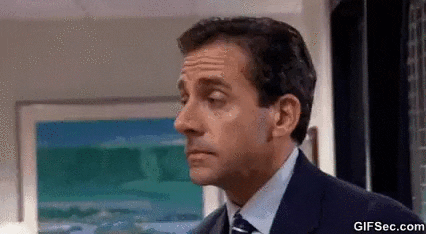
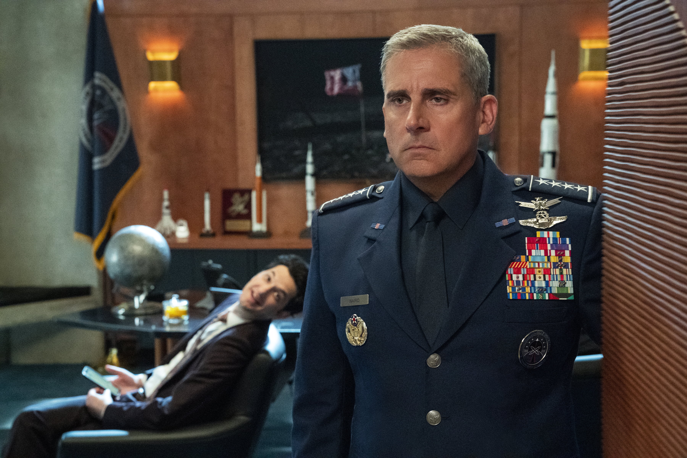
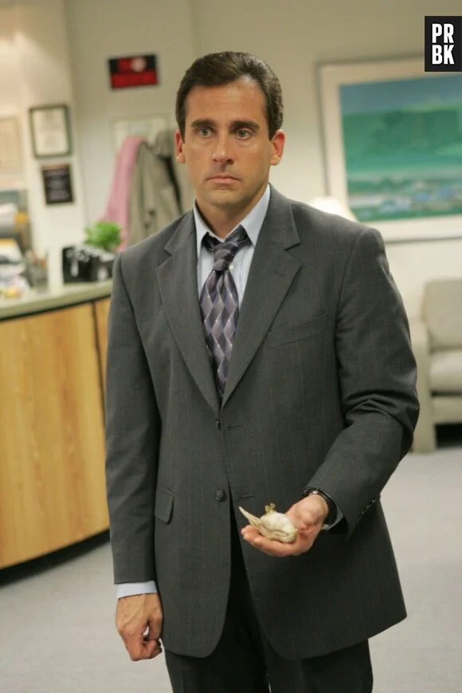
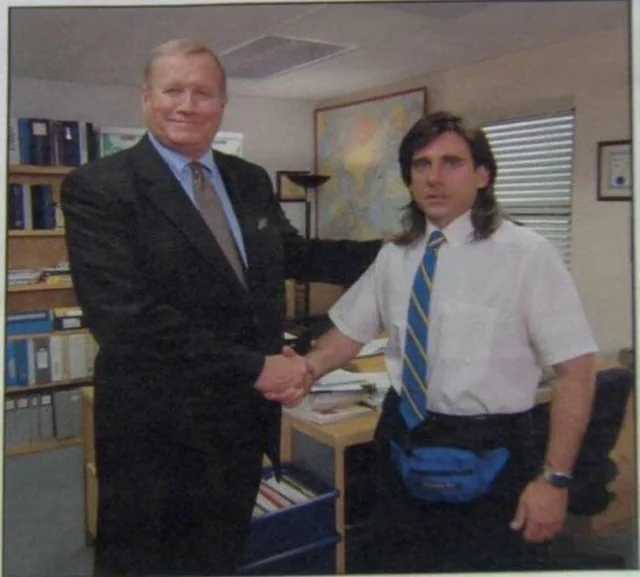

Steve Carell
Bas de la page
Steve Carell

Biographie
Interview
Filmographie
Photos
Photos
Steve Carell dans
The Office (2005)

Steve Carell dans
Space Force (2020)
Steve Carell en 2026

The Office (2005)

"mème"
tiré de sa série
The Office